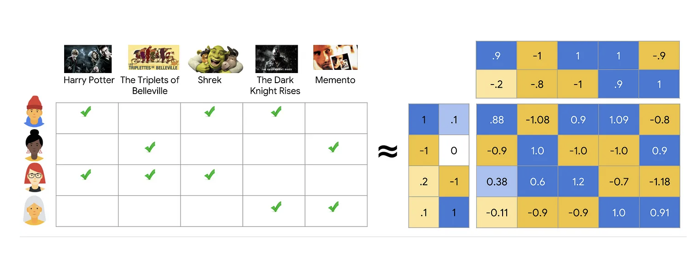
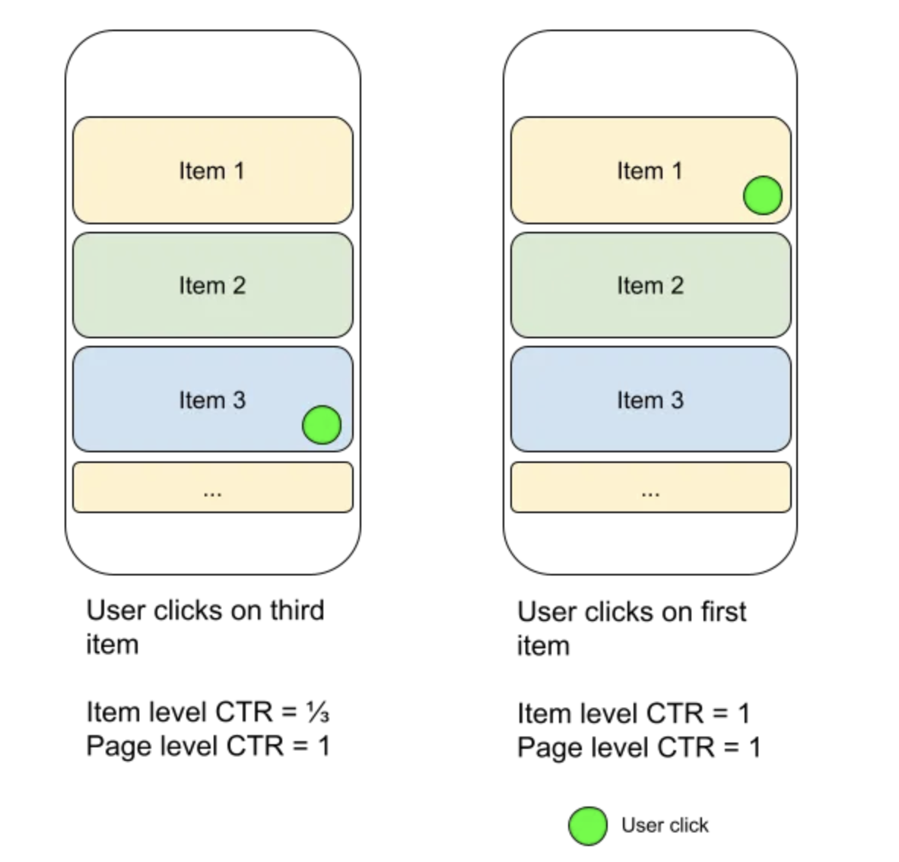

1. PyTorch: TorchRecSource 1, Source 2, TorchRec Docs, Google Colab ExampleName of the library TorchRec.This new library provides common sparsity and parallelism primitives, enabling researchers to build state-of-the-art personalization models and deploy them in production.RecSys as an area is largely defined by learning models over sparse and/or sequential events, which has large overlaps with other areas of AI.TorchRec includes a scalable low-level modeling foundation alongside rich batteries-included modules. We initially target two-tower ([1], [2]) architectures that have separate submodules to learn representations of candidate items and the query or context. Input signals can be a mix of floating point dense features or high-cardinality categorical sparse features that require large embedding tables to be trained. Efficient training of such architectures involves combining data parallelism that replicates the dense part of computation and model parallelism that partitions large embedding tables across many nodes.In particular, the library includes:Modeling primitives, such as embedding bags and jagged tensors, that enable easy authoring of large, performant multi-device/multi-node models using hybrid data-parallelism and model-parallelism.Optimized RecSys kernels powered by FBGEMM (Facebook GEneral Matrix Multiplication) , including support for sparse and quantized operations.A sharder which can partition embedding tables with a variety of different strategies including data-parallel, table-wise, row-wise, table-wise-row-wise, and column-wise sharding.A planner which can automatically generate optimized sharding plans for models.Pipelining to overlap dataloading device transfer (copy to GPU), inter-device communications (input_dist), and computation (forward, backward) for increased performance.GPU inference support.Common modules for RecSys, such as models and public datasets (Criteo & Movielens).EXAMPLE To showcase the flexibility of this tooling, lets look at the following code snippet, pulled from our DLRM Event Prediction example:
# Specify the sparse embedding layerseb_configs =[ EmbeddingBagConfig( name=f"t_{feature_name}", embedding_dim=64, num_embeddings=100_000, feature_names=[feature_name],)for feature_idx, feature_name inenumerate(DEFAULT_CAT_NAMES)]# Import and instantiate the model with the embedding configuration# The "meta" device indicates lazy instantiation, with no memory allocatedtrain_model = DLRM( embedding_bag_collection=EmbeddingBagCollection( tables=eb_configs, device=torch.device("meta")), dense_in_features=len(DEFAULT_INT_NAMES), dense_arch_layer_sizes=[512,256,64], over_arch_layer_sizes=[512,512,256,1], dense_device=device,)# Distribute the model over many devices, just as one would with DDP.model = DistributedModelParallel( module=train_model, device=device,)optimizer = torch.optim.SGD(params, lr=args.learning_rate)# Optimize the model in a standard loop just as you would any other model!# Or, you can use the pipeliner to synchronize communication and computefor epoch inrange(epochs):# Train
TorchRec has state-of-the-art infrastructure for scaled Recommendations AI, powering some of the largest models at Meta.Implementation NotesExample Implementation Jupyter NotebookFrequently, when building recommendation systems, we want to represent entities like products or pages with embeddings. For example, see Meta AI's Deep learning recommendation model, or DLRM. As the number of entities grow, the size of the embedding tables can exceed a single GPUs memory. * A common practice is to shard the embedding table across devices, a type of model parallelism. * To that end, TorchRec introduces its primary API called DistributedModelParallel, or DMP. * Like pytorchs DistributedDataParallel, DMP wraps a model to enable distributed training.Three pieces of TorchRec:nn.module EmbeddingBagCollectionDistributedModelParallelKeyedJaggedTensorPytorch represents embeddings through torch.nn.Embedding and torch.nn.EmbeddingBag. EmbeddingBag is a pooled version of Embedding.TorchRec extends these modules by creating collections of embeddings. We will use EmbeddingBagCollection to represent a group of EmbeddingBags.Here, we create an EmbeddingBagCollection (EBC) with two embedding bags. Each table, product_table and user_table, is represented by 64 dimension embedding of size 4096. NOTE Note how we initially allocate the EBC on device "meta". This will tell EBC to not allocate memory yet.
TorchRec provides abstractions over FBGEMM kernels that provide efficient implementations of the canonical nn.EmbeddingBags. Two of the optimizations that can be done areTable batching which allows you to look up multiple embeddings with one kernel call.Optimizer Fusion which allows the module to update itself given the canonical pytorch optimizers and arguments.This can be accessed by using the fuse_embedding_optimizer wrapper, which will replace embedding modules with their batched and fused counter parts. You can also directly use these efficient counterparts, take a look at torchrec.modules.fused_embedding_modules.NOTE Note that this step is optional - the following steps can also be applied to the non-optimizer EmbeddingBagCollection.
from torchrec.optim.apply_optimizer_in_backward import apply_optimizer_in_backwardapply_optimizer_in_backward( optimizer_class=torch.optim.SGD, params=ebc.parameters(), optimizer_kwargs={"lr":0.02},)
Now, were ready to wrap our model with DistributedModelParallel (DMP). Instantiating DMP will:Decide how to shard the model. DMP will collect the available sharders and come up with a plan of the optimal way to shard the embedding table(s) (i.e, the EmbeddingBagCollection)Actually shard the model. This includes allocating memory for each embedding table on the appropriate device(s).In this toy example, since we have two EmbeddingTables and one GPU, TorchRec will place both on the single GPU.To learn more about sharding, see our sharding tutorial.
model = torchrec.distributed.DistributedModelParallel(ebc, device=torch.device("cuda"))print(model)print(model.plan)
We query nn.Embedding and nn.EmbeddingBag with input and offsets. Input is a 1-D tensor containing the lookup values. Offsets is a 1-D tensor where the sequence is a cumulative sum of the number of values to pool per example.Let's look at an example, recreating the product EmbeddingBag above.
We need an efficient representation of multiple examples of an arbitrary number of entity IDs per feature per example. In order to enable this "jagged" representation, we use the TorchRec datastructure KeyedJaggedTensor (KJT).Let's take a look at how to lookup a collection of two embedding bags, "product" and "user". Assume the minibatch is made up of three examples for three users. The first of which has two product IDs, the second with none, and the third with one product ID.The query should be:
NOTE Note that the KJT batch size is batch_size = len(lengths)//len(keys). In the above example, batch_size is 3.Finally, we can query our model using our minibatch of products and users.The resulting lookup will contain a KeyedTensor, where each key (or feature) contains a 2D tensor of size 3x64 (batch_size x embedding_dim).
2. TensorFlow Recommenders (TFRS)Source 1, Source 2, Source 3, Source 4, TFRS makes it possible to:Build and evaluate flexible recommendation retrieval models.Freely incorporate item, user, and context information into recommendation models.Train multi-task models that jointly optimize multiple recommendation objectives.
import tensorflow_datasets as tfdsimport tensorflow_recommenders as tfrs# Load data on movie ratings.ratings = tfds.load("movielens/100k-ratings", split="train")movies = tfds.load("movielens/100k-movies", split="train")# Build flexible representation models.user_model = tf.keras.Sequential([...])movie_model = tf.keras.Sequential([...])# Define your objectives.task = tfrs.tasks.Retrieval(metrics=tfrs.metrics.FactorizedTopK( movies.batch(128).map(movie_model)))# Create a retrieval model.model = MovielensModel(user_model, movie_model, task)model.compile(optimizer=tf.keras.optimizers.Adagrad(0.5))# Train.model.fit(ratings.batch(4096), epochs=3)# Set up retrieval using trained representations.index = tfrs.layers.ann.BruteForce(model.user_model)index.index_from_dataset( movies.batch(100).map(lambda title:(title, model.movie_model(title))))# Get recommendations._, titles = index(np.array(["42"]))print(f"Recommendations for user 42: {titles[0,:3]}")
Real-world recommender systems are often composed of two stages:The retrieval stage is responsible for selecting an initial set of hundreds of candidates from all possible candidates. * The main objective of this model is to efficiently weed out all candidates that the user is not interested in. * Because the retrieval model may be dealing with millions of candidates, it has to be computationally efficient.* The ranking stage takes the outputs of the retrieval model and fine-tunes them to select the best possible handful of recommendations. * Its task is to narrow down the set of items the user may be interested in to a shortlist of likely candidates.RetrievalRetrieval models are often composed of two sub-models (example implementation):A query model computing the query representation (normally a fixed-dimensionality embedding vector) using query features.A candidate model computing the candidate representation (an equally-sized vector) using the candidate featuresThe outputs of the two models are then multiplied together to give a query-candidate affinity score, with higher scores expressing a better match between the candidate and the query.Choosing the architecture of our model is a key part of modelling.Because we are building a two-tower retrieval model (query tower + candidate tower), we can build each tower separately and then combine them in the final model.
# Query toweruser_model = tf.keras.Sequential([ tf.keras.layers.StringLookup( vocabulary=unique_user_ids, mask_token=None),# We add an additional embedding to account for unknown tokens. tf.keras.layers.Embedding(len(unique_user_ids)+1, embedding_dimension)])# Candidate towermovie_model = tf.keras.Sequential([ tf.keras.layers.StringLookup( vocabulary=unique_movie_titles, mask_token=None), tf.keras.layers.Embedding(len(unique_movie_titles)+1, embedding_dimension)])
RankingRanking models do not face the same efficiency constraints as retrieval models do, and so we have a little bit more freedom in our choice of architectures.A model composed of multiple stacked dense layers is a relatively common architecture for ranking tasks.
SourceThe first tech stack you should build today for personalized recommendations is retrieval using two tower models[1, 2] and ranking using gradient boosted trees. In this article we will learn about two-tower models. Three important topics in recommender systems:1. Foundational models (user-user, item-item) to build a baseline model for personalized recommendations2. The system architecture that one needs to build to serve personalized recommendations at a low latency3. How to improve the recommendation model from user feedback, and why separating recommendations into two stages, retrieval and ranking allows us to optimize the two types of losses separately. * Type 1: the user was looking for an item that was nowhere on the list. * Type 2: the item the user was looking for was ranked lower in the recommended list of items.Recap on recommendations, personalization, retrieval and rankingHere's a quick recap of what we are talking about. You are building a content app, a platform to connect users with the content they are looking for. Towards that end you build a home page for a user, and you want this to list content items on it in a way that the items most likely to be wanted by the user are on top. You are trying to provide a personalized experience, as opposed to showing the same items and order to every user. Since there are millions (billions? nice!) of content items to choose from the user, one cannot do easily a thorough ranking of all of them at serving time. That would be too slow. Hence you break the system into two stages: a) retrieval (a.k.a. candidate-generation) that returns a few hundred items b) ranking (a.k.a. re-ranking) which is a thorough process of looking at all retrieved items and considering all their features and user features in deciding how to order them in the final list.Two tower models to compute user and item embeddingsThe aim here is to train two neural networks, a user encoder and an item encoder such that items with embeddings very similar to the user are a great recommendation for the user.Encoding user informationWhat does the recommender system know about the user?1. The history of the items the user liked and time stamps (relative to now)2. What the user may have searched in the past3. The location of the user if shared4. The preferred languages of the user if shared / implicitly detected5. Other metadata of the user if shared like genres preferred, or past employment history etc, whatever is relevant to the recommendation platform we are developing.In a social context like Twitter, one could also potentially consider attributes of other users that this user is following / connected to.Encoding item informationWhat does the recommender system know about a recommendable item?1. The title, description of the item2. Other metadata like the language, publisher etc.3. Dynamic metadata like the number of views / likes by time.3. NOTE Note that technically we could also add an item side feature of the users who have interacted with/liked the item. However, this would be superfluous.The image above shows a trainable neural network in green that can be learned to produce a fixed size embedding of every item. This neural network basically learns to get the essence of all the information of the item that is relevant to recommendation.Putting it all togetherThe image above just joins the two 'towers'/encoders of the other two figures above. Thus for a pair of user and item, we can pass them through these towers to get a fixed size user embedding and an item embedding of the same size. Then we compute a dot-product of these two vectors. If this dot-product is high then we say that this item is a good match for the user.Training the neural networksThese encoders are trained to produce embeddings such that the dot product of a user, item pair that actually interacted is high and the dot product of a non interacting pair is close to 0.To get "positive examples", i.e. examples of user and item pairs the network should learn to recommend, we can look at what a user has interacted with in the past. You must be thinking "But wait, if I have watched Avatar, we will train the network to recommend Avatar again?". * Not really. What we do is that while training the model with the positive example {you, Avatar} we only use the features as they were just before you watched Avatar.If we only had positive examples to train with the network will just learn to say +1 to every user-item pair and that would not be a good recommendation. We need the networks to learn to demote poor recommendations. There are two ways in which practitioners generate "negative examples":Randomly pick items not watched by the user (Please read this brilliant summary on negative "candidate sampling")Pick items that the user has been presented by the app but the user has chosen not to watch (a.k.a. "negative impressions").Typically the first approach, negative sampling works better in the initial stages.Once the model has already reached a high level of recall, a bit of negative impression based training might further improve the model. Just using negative impressions for sourcing negatives might not work. * To understand why, lets consider this anecdotal example. Imagine that the model learns that you like Sci-fi movies and suggests a few, and you don't watch some of those. Now suppose there is a genre, I don't know, let's say romcom that you simply can't stand. This is what will happen if you use negative impressions to train your embeddings. You did not click on a Sci-fi option, which was probably good, like second best, but not the best Sci-fi option. Your model will learn that this second best Sci-fi option is as irrelevant to you as every romcom movie. It is hard to match this much nuance in embeddings. The embedding method will be super confused and will not know where to put you. So as a rule of thumb, use option 1, random negative sampling to pick your negative examples, and perhaps rely on the reranking layer to learn from negative impressions.How to build two tower modelsPersonally I would recommend building with an open source implementation like Tensorflow Recommenders first before trying to write it yourself. The challenge is not insurmountable but there are a few ways to trip when doing it from scratch.What led to two-tower models Matrix factorization lineageFoundational models (user-user, item-item) of recommendations, given an interaction history of users with items, one can use item to item similarity and user to user similarity to retrieve personally relevant items. (Seminal paper on this).Wouldn't it be great if we somehow had a shared set of categories, where each user painstakingly marks for each category whether they like it or not (in a -1 to 1 scale)? And if we also knew for each movie what is the true affiliation of the movie to each of these categories?In seminal work done in connection with the Netflix Prize, the authors learned a way of inferring these magical categories. We will henceforth call them "embeddings". The researchers used (low-rank) matrix-factorization to decompose the user-item interaction matrix into these user and item embeddings.

The image above (sourced from developers.google.com) shows how low-rank matrix factorization works. In this example, we are given a user-item matrix of 4 rows and 5 columns with 1s where the user has watched the item. However it learns a 2 dimensional user-embedding and and 2-dimensional item-embedding for each item such that the dot product of the user item embedding is very similar to the given matrix.While Matrix Factorization worked well for smaller datasets, in real world applications practitioners observed some problems. (a) The distribution of information is very skewed. There are a lot of views for a few videos for instance and very little watch history of millions of items. (b) They also observed that computationally a weighted alternating least squares minimization process is much more efficient and allows a distributed implementation.The biggest problem though was that Matrix Factorization or its improved variant Weighted Alternating Least Squares is their inability to factor side information, i.e. information other than the user-item interaction like the title, description, categories, language, user location, user searches, etc. This is what two tower models fix.For those of you who want to get a feel of this lineage, this short (4 hours) course should be well worth your time.Graph traversalAnother lineage of ideas goes through thinking about the graph of recommendable items. For eager readers, connect the dots between these papers:The YouTube Video Recommendation SystemDeepWalkGraphSageIdeas from natural language processingFinding embeddings such that the dot product correlates to the task at hand are popular in NLP. StarSpace by Chopra et al. is a wonderful paper showing areas where this approach has worked.
4. Recommendations using graph neural networksSourceMost companies use a two-tower model today for recommendations.A two-tower model can be seen as a simplification of a Graph Neural Network (GNN).Before we start a small refresher of what is a graph. A graph refers to a set of items, the nodes in the graph, some of which are connected to each other via edges. These edges are the structure that makes the graph special, makes it different from just having a set of items to recommend.To see an example of where edges are relevant to recommendation, think of Twitter. Lets say, you , a Twitter user, would follow people, and hence add edges to Twitters graph. Twitter is using these edges to show you relevant tweets.Using graphs to build personalized recs(item-item similarity / label propagation )The earliest successful approaches of personalized recommender systems involved seeing which items are similar to the ones the user has already liked (Refer to post #1 to dig into item-item similarity based personalized recs). The main idea in this approach is to
make a graph of the items we can recommend. Add edges between them based on what users considered similar. Find items in this graph close to the items the user has liked already.
To take a concrete example, in the paper The YouTube Video Recommendation System (Davidson et al. 2010), the Youtube team looks at videos as nodes in a graph. Every time a user watches a video v1 and v2 in a 24 hour period, they add an edge from node(v1) to node(v2) in the graph. If the edge is already there, then they increase its weight.You could look at the set of items you want to recommend as nodes in a graph. You could then figure out some automatic approach to inferring edges and weights from the data you have. If we set up edges based on user activity, the recommendations will be based on semantic similarity. If we set up edges based on similar metadata like similarity of title or categories, the recommendations would capture something else.When it comes to recommending items to a user, they recommend the videos that have edges or short walks ending at them starting from the videos the user has watched recently.Performing inference of personalized recommendations on the same graph as shown in the first figure. The user has watched videos 1 and 3 before. We start from those and sample some short random walks that end in videos 2, 4 and 5. These are the ones we recommend.This is an instance of label propagation on graphs. Label propagation refers to a case when we have labels for a few nodes from the training data and for the remaining points we are inferring the labels by using the graph structure. In this case, we already have the label watched by this user for videos 1 and 3. We are sampling a few paths in the graph based on the edge weights and propagating the label can be watched by the user to other nodes our paths take us to.The basic idea is remarkably simple and intuitive. For example, in the context of video recommendation:1. Just build a graph with nodes corresponding to videos and keep adding to the graph as new recommendable videos are being added to the platform.2. Keep adding counts to the edges (a, b) to the graph as users watch video b soon after watching video a.How to recommend (Serving)Now at serving time, start with the videos in the users history and sample short random walks on this graph and recommend the videos you end at.Other possible improvements:Diversity boosting* As mentioned in PinnerSage (by Pinterest/Stanford) team, instead of following paths from all items in user history, you could choose some representative items in history, perhaps by clustering, perhaps by recency. * For example if my account (my daughter!) has watched thousands of Peppa Pig videos, I can just use the most recent one to find recommendations.Freshness* Keep removing 10% of old edges perdiocally. * Example: Every day among edges that are a month old, remove 10% of them. Remove 10% of the edges that are 2 months old and so on. This will ensure freshness in your recommendations.Improve new user experience* New users to your platform wont have any seed items to start search paths from. * To be able to recommend to them, add a node No video watched to the graph and add an edge from this node to the first video a user is watching on your platform. * This will help you recommend good videos to new users. * This segment is particularly important for the success of your platform.Two Tower models vs GNNsAt this point, you are probably thinking about pros and cons of using a GNN vs a two-tower model for personalized recs.A two-tower model tries to encode the information we have for a user into an embedding for that user, and similarly learn an embedding for each item in a way that the user embedding is closer to the items the user is likely to select and far from the ones the user is not interested in.To recap from post #4, as shown in Figure above, a two-tower model is a way to build recommender systems that has achieved state of the art results in platforms like Youtube and online ads (Pinterest). Just like GNNs it tries to learn embeddings of user and item nodes that are outputs of neural networks.
This is a GNN showing how we might recommend items to users 1 and 2. User 1 has previously liked items 1 and 3. User 2 has previously liked items 3 and 4. While recommending items to User 1, we will try to see which of the item nodes not in history (i.e. 2 and 4) have embeddings with the highest dot-product with the embedding for user 1. These prospective edges in the graph have been shown with green dashed lines.As I have tried to show in Figure above, a GNN can represent what a two-tower model is able to model. A two-tower model is exactly what a GNN model would be if you had exactly two types of nodes in your graph and all edges were between user and item nodes, i.e. if your graph were bipartite between user and item nodes.In fact, you could think of a two tower model being able to capture more than bipartite graphs. As long as the information flow is acyclic, you could capture it with a two tower model.For instance, if you were trying to make a recommendation system in a domain where users can search items and items have publishers / creators, we would have four types of entities:1. users2. items3. publishers4. nodes for text entities that could be searched or could appear in the title / description of items.5. nodes for global context like Christmas / SuperbowlFigure above shows how a Graph Neural Network with multiple types of nodes can represent the entities in your recommendation domain more accurately. You can then learn embeddings for publishers and search text as well. You can add custom features to each type of node. Keyword nodes could have pretrained BERT embeddings as input features for instance.This can be modeled by a two-tower model. However as you can see in Figure above, this is modeled more naturally using a GNN with different node types and features.Astute observers might be wondering if GNNs allow the encoder for user nodes to be different than the encoder for an item. The answer is yes. That is because while technically encoders for all nodes in the graph are the same, one of the inputs to the encoder is the type of the node as an input feature. Hence we can build a pathway dependent upon the node type.Theoretical foundations of Graph Neural NetworksPlease see the slides here for a deep dive presentation on GNNs.Besides the Youtube paper above, a few good papers on this topic are:1. DeepWalk Social Recommendations (2014): This uses the SkipGram approach from NLP to find embeddings of nodes that make sampled random walks of the Graph consistent.2. Node2Vec (2016): Expanding on DeepWalk but noting that the learned representation will be different if we focus on depth or breadth in sampling. (Read this excellent post to understand the difference)3. Graph Convolutional Networks Kipf et al. 2016: An efficient variant of convolutional neural networks operating on graph structured data.4. Neural Graph Machines (2017): Learns neural networks to map node features into embeddings in a way that are similar between nodes that are connected by an edge in the graph.In this video (at time 25:41), Petar Velikovi (DeepMind) talks about how to train node embeddings of the graph such that the dot-product of nodes with an edge are high and the dot product of nodes without an edge should be low. He also elaborates how DeepWalk and Node2Vec generalize this notion of structure.An event-based graph neural networkMotivation1. Changes happen due to events:If you look at Figures above, the only time the user embedding would change is if any of the inputs to the user-info encoder would change. Since the user features, like location and language are more or less static after onboarding, the main changes in inputs could be due to(a) adding items to user history or(b) due to changes of embeddings of items in user history or(c) due to changes in global context like Christmas / Super Bowl etc.All of these can be represented in a graph.2. Training speed:A usual complaint from practitioners for the first generation of Graoh Neural Networks (like GCNs) was that training them is very slow. In a recent work, Temporal Graph Neural Networks (blog post and research paper) by Rossi et al. 2020 build a way to train GNNs which is event based and trains fast. For instance when a user likes an item, only the embeddings of the user node and the item node are recomputed.3. Better metrics:Researchers at Twitter have observed over 50% improvement in metrics using TGN (Figure below).In Figure above researchers at Twitter observe huge improvements in performance metrics by using TGNs on real world data sets where the graph is constantly changing and being able to recommend new items better matters disproportionately more.If you are building a recommender system for a service at scale, I recommend using Temporal Graph Networks (TGNs).ConclusionWe showed how to look at users, items and context of a personalized recommendation system as a graph. We showed how graphs based recommendations are at least as powerful as the state of the art two-tower model. Leading recsys platforms have observed over 50% gain in performance metrics using it.
5. User Feedback to Improve Personalized RecommendationsSourceWe have built a personalized recommendation system ("recsys") , and we are trying to figure out how to improve it. We will see the sort of feedback we get from live usage and the sort of feedback we can get from surveys. That will explain why the industry separates search and recommendations into two stages: retrievalranking (Ref: paper on Youtube's two stage recommenders)Implicit feedback from usersLet's say a user comes to the app and scrolls the entire home feed but does not find the content they are looking for and well close the app.That is called a recall loss i.e. the items retrieved for the user just do not contain what they were looking for.Another type of loss can be that the user comes to the app and scrolls and does find the content they were looking for but just a little lower down in the feed like say the 8th spot.That means there was a possibility of the recsys making the user's experience better by ranking this result at the top. This is called a ranking loss. A popular metric for this is nDCG.The image above is from this research paper and shows the now universally used two-stage recommender system.The reason this is called implicit feedback is that we are trying to infer what the user has in mind from their actions. We will talk about explicit feedback from actual user surveys later in this article.How to get data to train retrieval and ranking from implicit feedback.To train retrieval Imagine you have a user who comes to the app, doesn't find anything on the feed, then searches an item and finds what they were looking for. This is a great way to figure out what was missing in the set of retrieved items. Even if you have not implemented a recommender system yet and just have a search interface in your app, you could be collecting data to train your retrieval model.To train ranker Imagine the user sees a feed and selects the fifth item in the list. This shows us that the first four items should have been ranked lower in the list. We can train our ranker with this sort of data. (This is a super cool blog on ranking by Chris Burges where we talks about about training the ranking module.)Explicit feedback from usersWouldn't it be great if you could show a set of items to a user and ask them their opinion of each? Perhaps you could get a 1-5 rating from the user about how much they would like that item. Please see figure below for an example (source). This 5 point rating is what many recommender systems developers use to train their initial rankers. The benefit of using rating data to train the ranker of a personalized recommender system is that since retrieval is already personalized, chances are that we already have decently good candidates for the user. Hence it is likely that the information derived from the user's ratings is very high. We are not just randomly picking items and showing them to the user I mean. In my experience a good personalized ranker based on an ensemble of boosted trees can be trained from such explicit feedback with as low as under 10,000 data points and it could generalize well to millions of users. This sort of sample efficiency is hard to achieve with implicit feedback.Explicit feedback is really useful in early stagesIn the early stages of building a recommendation system, explicit feedback can be very useful. In fact, even before you have the UX nailed down and before you have launched the service, if you have a survey system that is capable of delivering personalized recommendations to the user and asking their feedback, then you could train a model from it. * This model would be able to rank videos higher that are likely to receive 5 star ratings from the user. * When the system is mature though, implicit feedback from actual usage has more information and makes explicit feedback redundant.You might still find value in using explicit feedback to measure aspects that the UX does not easily convey like measuring which content should be blocked for trust and safety reasons for instance.RecapIn this article, we talked about the two types of losses in a recommendation / search system : retrieval loss and ranking loss. We talked about the types of feedback we can get to train both modules. We hinted at the efficiency of using explicit feedback, especially after a good baseline retrieval system has been built.PS: This course by Google might be a good source of information on the terminology used in these articles.
6. Incorporating product management into machine learningIn this section we will look at how to structure the metrics and machine learning (ML) objectives of a personalized recommendation system in order to achieve different product goals. There is a misconception among many industry practitioners that an ML approach reduces the role of product teams since using ML implies not using product driven heuristics. I would like to show that this is not the case An ML approach is merely one lever to capture the product goals. One has to start with the outcomes desired by product and work out objective of the recommendation system from those.Case study: objectives of a content recommendation systemYou are building a personalized content recommendation system. A good way to think about your goals are along three axes:1. EngagementYou might want to maximize the click-through rate of the recommended content for instance. This is a sort of immediate reward, that measures the instantaneous reward to the user from the recommendation. Practically, most recommendation systems would use more down-the-funnel engagement metrics that capture true intent beyond CTR.
Figure 1:Click-through rate is one prelim measure of engagement for the recommended content
2. SatisfactionEven if you are doing great with getting users to 'engage' with your content, how do you know that they are satisfied?You should try to measure the satisfaction of your users with the content. One common way to do this is through surveys to collect ground truth.
Figure 2:Users may be surveyed with items that the recommender system would have served them on the home page to see their satisfaction with the content.
3. ResponsibilityThis is about making sure that you are not showing inappropriate or unsafe content, and not recommending misinformation for instance. A lot of users consider recommended items as sort of blessed by the source. Hence you should be extra careful to measure the trust and safety aspects of your recommendations. Apart from surveys, another way to measure this might be a UI element for users to cross-out a recommendation, and then you could ask them the reason for it.NOTE 3 axes of objectives for a recommendation system are: Engagement, Satisfaction, Responsibility. An ideal system should be able to blend these into one ensemble model.Designing objectives of the ranking system for the above metricsOnce you have figured out the objectives that align with your metrics, make a trainable model architecture that learns from the different sources of user feedback. Here we are trying to predict three objectives but instead of have three entirely different models we have a common feature extraction neural network below them. For each item this model will produce an estimate of the three objectives at serving time.As product goals change, the metrics and ML objectives evolveExample 1: What if the product team wants to maximize the total time spent and not the total number of videos watched? "Ranking by click-through rate often promotes deceptive videos that the user does not complete (clickbait) whereas watch time better captures engagement." These are excellent references on this topic: [Youtube Now::Why we focus on watch time], [Beyond clicks, Dwell time for personalization], [Deep neural networks for youtube recommendations]Example 2: Now suppose you get feedback from your users that the recommendations are not diverse enough. Let's see how to measure and respond to it in more detail below.Page level metrics vs item level metricsWhen we talk about an engagement metric like click through rate (CTR), we could measure this per item or for the entire page/slate of recommendations. An item level CTR would measure the observed probability of users clicking per item presented to them. However a page level CTR would measure the probability that the user found something useful in the entire page.

Primarily maximizing item-level CTR might lead you to produce recommendations that are mostly around the topic the user is most interested in but under represent the secondary interests of the user. Page level CTR appears to correlate better to the user's finding something useful. However only looking at page level CTR might lead you to miss out on some headroom in your ranking model. Designing a recommendation system to enhance diversityHow to change ranking and display to maximize the page level metrics discussed above.Optimizing for the long termSo far we have been measuring the goodness of a slate of recommendations mostly based on immediate actions of the user. However, the goals of the product are to help users along the activation to retention funnel and keep coming back to the service. The business thus cares about long term effects like how often is the user coming back. How do we handle that?The idea will be to measure and train for the same. * For instance, if we have two items with say roughly similar probability of being liked by the user, but one of them, is the start of a long series and the other is a one time content, we want to recommend the one from the series first. * This way there is a higher likelihood of the user coming back again.The value of a recommendation to the business is not just related to the current probability of the user watching a video but also future watches that are made more likely due to the recommendation.MetricsLong term metrics could be the total time spent by users on the platform consuming content, the average number of times a user returns to the platform in a month (a.k.a. L28)ObjectivesIn this paper and video presentation, the authors have used a reinforcement learning approach to find a recommendation policy that maximizes not the probability of an instantaneous click but the total time watched in the next 8 hours or so. NOTE Note that the authors mention that this was one of the biggest launches in Youtube in the last two years!However, one simple way to think about this problem is that so far we have been ranking items based on the probability of a click. What we were to rank based on a sum of probability of click and the presence of extremely related content. For the second part we just need to make a model that given a source item, returns content that is very likely to be watched after the source item is watched.Total value of recommending an item =[Likelihood of the user clicking on the item + Pr(Click)(user, item)]Exp(time of watching other items that are usually watched after watching this)We already have a model for the first part. The model for the second part is usually developed separately as a "WatchNext" model. This is a good research paper on this topic. While this paper describes a personalized WatchNext model, a user agnostic WatchNext model fits well in this setup as well. If the model is unpersonalized we could compute this second term offline, store it in a key-value table keyed with the recommended item and just load up that value as feature of the recommended video at serving time.
7. Diversity of recommendationsIn this section, we will:1. Discuss why diversity of results is important.2. Explain a machine learning method of boosting diversity in recommendations.3. Walk through an example of this method.Lets explain diversity through a simple example in the image above. The recommendations on the right appear more diversified compared to the ones on left. List on right captures my three major interests: I watch basketball highlights, my kids watch Peppa Pig videos and (sometimes!) I watch ML lectures.Why diversity? the only free lunchBoosting the diversity of the actions has been a time tested approach to improving performance. In this article we are talking about diversity of results and the results shown are the actions the recsys can take to satisfy the user without knowing with certainty what the user was looking for.Diversification of actions has been useful in other fields as well. In portfolio management, Nobel prize winner Harry Markowitz called diversification the only free lunch in finance. In autonomous driving, the IntentNet paper introduced a paradigm for predicting the behavior of agents while diversifying over the set of intents they could have and not just predicting the most likely path.What is common to these approaches is that the prediction system is subject to variation in what the user, the environment or other actors might want to do.While our prediction system tries to do a good job of modeling the intents of the unobserved environment, it needs to be humble and accept the possibility of mistakes / uncertainty in its prediction of the environment.Diversity of a slate versus diversity across multiple visits of the userBefore we talk about how to implement diversity, we should recognize that there are two ways of adding diversity to recommendations.1. Diversity of a single set of resultsFor each visit of the user the recommendations shown could cover a number of interests that the user might had.* For instance, in the image below on the left the results are shown in a decreasing order of likelihood of the user clicking on them. The ranked list on the right chooses to show items from a different category than the ones already shown.2. Diversity across multiple visits of the same userImagine you have a user coming to your page fairly regularly, say at least once a day. You have some idea from past behavior of their interests but their interests are not narrow. In such a scenario you might want to add an element of exploration in each visit. You could add this exploration/noise in the ranking at an item level or also at a genre/category level (See image below).If you are wondering why this might be better than Diversity in a slate, I encourage you to not try to compare them. These are just different ways to look at the problem and could be additive to your problem. One advantage of the second option is that it would reduce the cognitive load of the user. Instead of each result being very different the user can quickly browse and skip a topic if that is not what they are looking for.An overlapping concept with this form of diversity is impression demotion, a topic which we will cover in greater detail in future.In this article though we are only concerning ourselves with diversity of a slate of recommendations.System design of diversity boostingIn terms of system design, diversity boosting can be added at various stages:1. Having multiple candidate generators.For instance, having a candidate generator that skews towards popular content and one that skews towards personal results ensures that we have a good set of results to diversify the slate.2. After we have computed a ranking score for each result, we will rank items in a way that boosts for diversity (look at the second last step in the flow chart above)In the rest of the article we will focus on a way to implement diversity boosted ranking.Diversity boosted ranking using Maximal Marginal RelevanceThe idea in this method, Maximal Marginal Relevance (MMR) is to iteratively select a recommendation from the yet unselected set of recommendations based on what maximizes adjusted relevance, i.e. relevance to the user k similarity to previously selected results.1. For each item, set relevance(item) = Score from ranking model for that item.2. For first K = 10 steps:(a) Select the item with the highest score =(1-)*relevance - * Similarity(item, previously selected set)3. Sort the remaining items in descending order of score and add them in this order to the final ranked list.ExampleSuppose we are using Maximal Marginal Relevance based ranking to rank items A1, A2, B1, B2, C where A1 is very similar to A2, like say A1 and A2 are NBA highlights videos, B1 and B2 are say very similar Peppa Pig videos and C is on a different topic.The initial ranking scores are: {[A1, 1],[A2, 0.8],[B1, 0.6],[B2, 0.4],[C, 0.2]}.If we rank purely based on score then the order would be: {A1, A2, B1, B2, C}.However, using MMR the order is {A1, B1, C, A2, B2}. Lets see how.After selecting A1 the similarity penalty of A2 becomes 1. Hence the Marginal Relevance of A2 is no longer the highest after A1. A1s marginal relevance = (0.5 0.8)-(0.5 1)=-0.1B1 is now the item with the highest Marginal Relevance. Hence the second item selected is B1.Similarly after A1 and B1 are selected both A2 and B2 have a similarity penalty of 1. Now C is the item with the highest marginal relevance.Continuing along this line, we will see that A2 and B2 will be selected. The final order is thus A1, B1, C, A2, B2.Key takeaways1. Diversity boosting is very likely to improve search / recommendation quality, especially when the user could have multiple intents or interests. (Increased CTR by 73% in an industrial recsys I am personally experienced with.)2. There are advantages of adding diversity boosting in both retrieval and ranking.3. To implement diversity boosted ranking, Maximal Marginal Relevance is an easy and very successful approach. This approach powers some of the most successful recommender systems today.
8. Sampling : the secret of how to train good embeddingsMachine learning solutions are the industrial state of the art in most search, recommendations, online ads, high frequency trading and self driving applications. Irrespective of the industry, a key ingredient in the quality of the model/embeddings is the data distribution that is used to train the model.Sampling and auto-labeling of the sampled cases is basically where most of the work is happening in applied ML teams.About half of the above CVPR 2021 talk by Andrej Karpathy, for instance, talks about sampling and auto-labeling of interesting cases to feed their vision-only perception model.OutlineIn this article we will look at evolution of sampling from a first principles approach. We will restrict ourselves to multi-class classification.1. We will see why sampling is needed for efficient training of embeddings/classification models.2. We will see a method, in-batch negatives, that is super fast but produces embeddings that lead to unpopular items.3. We will see how to correct it via importance sampling.4. We will bring it all together with Mixed Negative Sampling.Probability of selection of an itemA common way to express the probability of outcome y (ad click if shown / search result click / object type recognized ) given input x (user / query / image) is:P(y|x)=e(x,y)
jCe(x,yj)The equation above shows the probability of an item y being selected to be proportional to the exponent of the dot product of embedding of the item with the embedding of the query (Source: Mixed Negative Sampling)The formula above claims that if you give me an embedding of the input x then the probability of the output being y from a set C of options is proportional to the exponent of the dot product of the embedding of x and the embedding of y i.e., P(y|x)Exp(Embedding(x).Embedding(y)).For instance, for a short video app like TikTok, y would be a video in your corpus, x would be the user features and user history.Now to make something a probability, you need to have a summation over all possibilities in the denominator. It is easy to see that computing the denominator becomes computationally expensive when the set of possibilities C is large. However, before we solve that problem, lets try to understand the effect of a large C in serving results and in training.Serving is unaffected by the large corpus sizeServing of results refers to what needs to be done when a user request comes in.As shown in the above image, during the retrieval phase the set of possible items, C, could be in millions. However, since the denominator is the same for all items, this amounts to choosing the top-100 or so items by the dot product of query and item, i.e., Embedding(x).Embedding(y). Since there are efficient solutions for Maximum Inner Product Search (like ScaNN), we dont need to worry about the large C during retrieval.Training of each example requires updating the entire corpus!The problem does not go away during training time though. For each instance of a positive example {query, results clicked}, it seems like we need to compute (Embedding(x).Embedding(y)) with y ranging over the entire corpus. We also need to backpropagate and update the embeddings of each item. That means, for a corpus with 100 million items, we are doing 200 million operations per interaction that we are learning from. Can we do better?Using Negative Sampling to avoid training on the entire corpusIn Distributed Representations of Words and Phrases and their Compositionality (Mikolov et al. 2013), the authors try to solve this in the context of NLP and word vectors. They say that the denominator is in expectation equivalent to sampling a few negatives from the corpus and not using all of them.log(vTwo vwI)+ki=1Ewi ~ Pn(w)[log(-vTwi vwI)]The equation above shows while training instead of updating the entire corpus of embeddings, we can just sample k items and consider these unselected items as representative of the entire corpus. (Source: equation 4 of Mikolov 2013).In this video, Andrew Ng has explained the same.Using In-batch negatives to reduce training timeMikolov et al. 2013 also introduce an optimization that is particularly useful for GPU based computation, that of in-batch negatives. If we take a batch of 1024 positive examples, {query, result}, then every result in the batch that is not the same as the one that was clicked for the query can be used as a negative.This works well in practice. Training is fast due to the implicit compute parallelism of the GPU.
Figure 3:An illustration of in-batch negatives. (Source this paper)
Use importance sampling to correct (un)popularity bias of in-batch samplingHowever, the distribution of negatives is not what we were looking for in Figure 3 above. For instance, the in-batch negatives are all taken from items some other user has clicked. Hence they are more likely to be popular items.To account for this, if an item selected has a distribution Q(y) in how the negatives have been sampled then Q(y) would have to be in the denominator. (Also referred to as Importance Sampling).To understand why, suppose an item is sampled more frequently than uniform, then we should reduce the effect on the loss of every occurrence of the item. Remember that in eq. (1) at the top the denominator was a simple sum over all items in C.EP[(u,vj)]jCwj
jCwj(u,vj)Where:wj=eu,vj-log(Qi) incorporates the logQ correction utilized in sampled softmax.Equation above is the gradient flow corrected for the distribution Q of negative samples (Source: Mixed Negative Sampling, Cited 2003 paper: Quick training of probabilistic neural nets by Importance Sampling).It explains how the term for item j is eu,vj-log(Qi) which is the same as eu,vj
Qj.For a mathematically rigorous description of many approaches to sampling read this document on candidate sampling. It shows how to correct for the bias and how not correcting for the bias will train a function that is biased towards less popular items. PS: These are a couple of threads that have tried to explain the candidate sampling document: negative sampling vs sampled softmax, on stackexchange.A general application of importance sampling in Reinforcement learning based recommendationsIn the famous REINFORCE recommender system paper, which shows a brilliant application of reinforcement learning to recommender systems, the authors address a similar problem. They have data from an existing sampling generator and hence they need to divide the loss-gradient of the sample with ().See this video.Mixed Negative Sampling : An elegant simple solution to the above problemsWe know the ideal solution for probability estimation is to sample uniformly.We know that using in-batch negatives is very fast but produces a recommender that is biased against popular items.Mixed negative sampling is an approach that basically does both, uses in-batch sampling and also uniformly sampled negatives.A wonderful paper showing this works very well is Towards Personalized and Semantic Retrieval: An End-to-End Solution for E-commerce Search via Embedding Learning by JD.com search team.